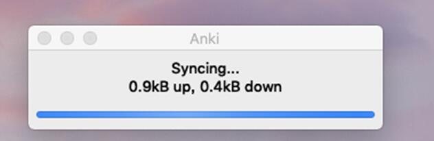
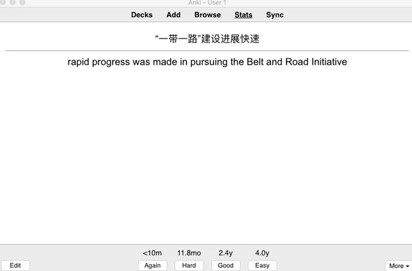
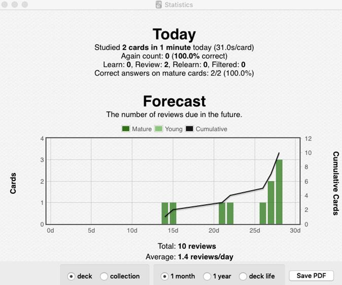

1. Synchronization: Use the free AnkiWeb synchronization service to keep your cards in sync across multiple devices.
2. Flexibility: From card layout to review timing, Anki has a wealth of options for you to customize.
3. Media-Rich: Embed audio clips, images, videos and scientific markup on your cards, with precise control over how it's shown.
4. Optimized: Anki will handle decks of 100,000+ cards with no problems.
5. Fully Extensible: There are a large number of add-ons available.
6. Open Source: Because the code and storage format is open, your important data is safe.
While there is no denying the huge impact SuperMemo has had on the field, it is not without its problems. The program is often criticized for being buggy and difficult to navigate. It only runs on Windows computers. It’s proprietary software, meaning end-users can’t extend it or access the raw data. And while very old versions are made available for free, they are quite limited for modern use. Anki addresses these issues.
There are free clients for Anki available on many platforms, so struggling students and teachers with budgetary constraints are not left out. It’s open source, with an already flourishing library of add-ons contributed by end-users. It’s multi-platform, running on Windows, Mac OSX, Linux/FreeBSD, and some mobile devices. And it’s considerably easier to use than SuperMemo.
When learning new cards, or when relearning cards that you have forgotten, Anki will show you the cards one or more times to help you memorize them. Each time is called a learning step. By default there are two steps: 1 minute and 10 minutes. You can change the number of steps and the delays between them in the deck options.
There are three rating buttons when learning: 
Again moves the card back to the first step.
Good moves the card to the next step. If the card was on the final step, the card is converted into a review card (it graduates). By default, once the card has reached the end of the learning steps, the card will be shown again the next day, then at increasingly long delays (see the next section).
Easy immediately converts the card into a review card, even if there were steps remaining. By default, the card will be shown again 4 days later, and then at increasingly long delays. The easy button will not be shown if you are in relearning mode and it would give the same interval as “good.”
The statistics window is accessed by clicking on the graphs icon in the top right of the main window, or by pressing Shift+S. The statistics window will show statistics from the currently selected deck and any subdecks. If you click on "collection" on the bottom left, statistics will be shown for your entire collection instead.
By default Anki will show you statistics for the previous month. You can change this to a year scope or deck life scope at the bottom. (The "today" section at the top is of course unaffected by this selection.)
Clicking on "Save Image" will save an image of the statistics to a file on your desktop to make it easy to share your statistics with others.
Reference: https://apps.ankiweb.net/docs/manual.html#studying